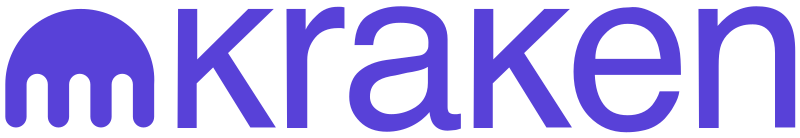
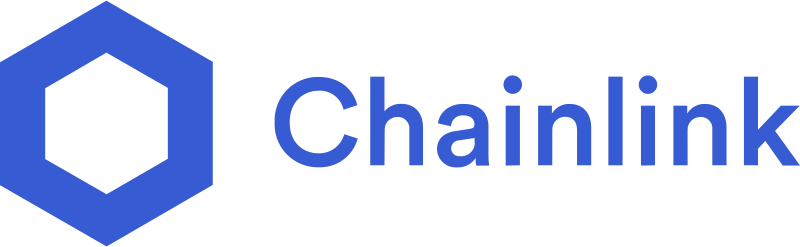
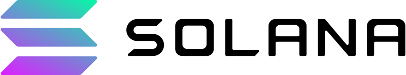
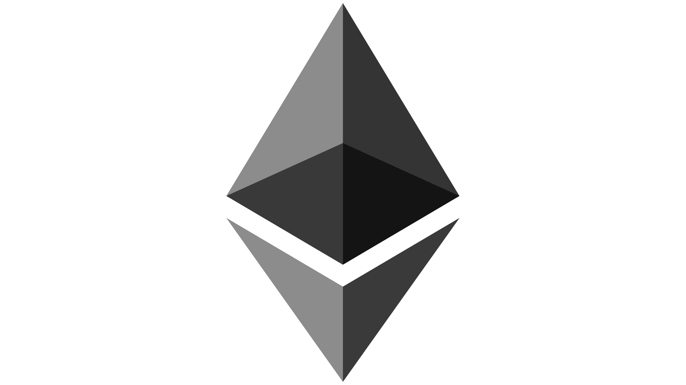
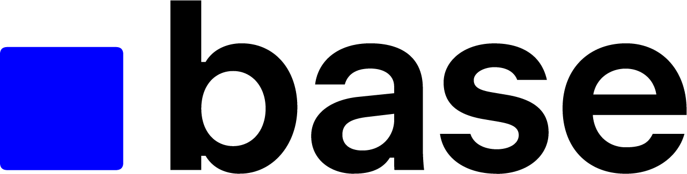
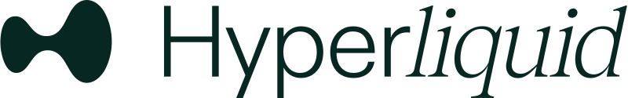

The First Volatility-Backed Unstable Coin
Turning instability into an economic engine.
Traditional stablecoins suppress volatility. USDUC uses it to generate attention, liquidity, and non-stop on-chain activity.
The core team behind USDUC includes veterans in the memecoin and DeFi space, bringing together years of experience building billion dollar crypto projects.
The stablecoin market is $300B today and projected to reach $3T+ by 2030. It is pegged, permissioned, and narratively empty.
Unstable Coin brings forth an anti TradFi vehicle, ground up, for a future "neo-bank" sector filled with hundreds of stablecoins. USDUC targets 10-25% of this market by offering a meme-native, story-driven alternative built for culture and engagement.
USDUC now expands into DeFi's missing Unstable Layer: volatility farming, sustainable yield, community vaults, and liquidity engines. Memetic DeFi for the hungry cypherpunk builder crowd.
Memes generate attention. Volatility creates action. USDUC turns both into economic value.
Partners & Traction
Partners



Trading On




Who's Talking About $USDUC
Documents
-
USDUC Investment Thesis
A deep-dive into the investment thesis behind Unstable Coin. Prepared by Sonar in collaboration with Vikara Capital. -
Unstable Finance Overview
A brief pitch deck describing the Unstable Coin's plans for Unstable Finance and memetic defi.
Connect
Build With Us. Join the Community.
Embrace Volatility, Billions Will Follow.